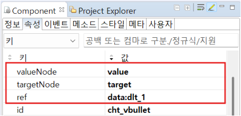

FusionChart의 종류 중 하나인 FwGanttChart의 기본 사용 예제입니다. ganttChart는 작업별 타임라인을 표현하는 가로 막대 차트입니다. 상단의 데이터리스트가 하단의 차트에 연결된 예시입니다.
데이터를 ganttChart로 표현
다음은 FwGanttChart 컴포넌트의 필수 적용 속성입니다.
[필수] ref="dataList ID" //차트와 연결할 데이터리스트
[필수] taskNode="column ID"
[필수] startDateNode="column ID"
[필수] processNode="column ID"
[필수] endDateNode="column ID"
dataList를 연결하고, 'taskNode', 'startDateNode', 'processNode', 'endDateNode' 속성을 지정합니다. 'taskNode' 속성은 차트에서 표현되는 개별 작업을 나타내는 컬럼으로, 일반적으로 작업의 이름과 관련 정보를 포함합니다. 'startDateNode' 속성은 차트에서 각 작업의 시작 날짜를 표현하는 컬럼입니다. 'processNode' 속성은 차트의 프로세스 항목을 표현하는 컬럼입니다. 'endDateNode' 속성은 차트에서 각 작업의 종료 날짜를 표현할 컬럼입니다.
Image 1.웹스퀘어 스튜디오의 Component View - 속성 설정 예시

Example 1.Source
<xf:group class="example_div_tb_style_wrap mb_def" id="" style=""> <xf:group class="example_div_tr_style" id="" style=""> <w2:textbox class="example_div_th_style" escape="false" id="" label="dataList structure" style="margin-bottom: 7px;"></w2:textbox> <w2:gridView fixedColumnWithHidden="true" dataList="dataList1" useShiftKey="true" scrollByColumn="false" style="height:127px;" id="gridView1" autoFit="allColumn"> <w2:header style="" id="header1"> <w2:row style="" id="row2"> <w2:column width="70" style="height:20px" inputType="text" id="column11" value="processes" blockSelect="false"> </w2:column> <w2:column width="70" style="height:20px" inputType="text" id="column9" value="tasks" blockSelect="false"></w2:column> <w2:column width="70" style="height:20px" inputType="text" id="column7" value="startDate" blockSelect="false"> </w2:column> <w2:column width="70" style="height:20px" inputType="text" id="column3" value="endDate" blockSelect="false"> </w2:column> </w2:row> </w2:header> <w2:gBody style="" id="gBody4"> <w2:row style="" id="row5"> <w2:column width="70" style="height:20px" inputType="text" id="processes" blockSelect="false"></w2:column> <w2:column width="70" style="height:20px" inputType="text" id="tasks" blockSelect="false"></w2:column> <w2:column width="70" style="height:20px" inputType="text" id="startDate" blockSelect="false"></w2:column> <w2:column width="70" style="height:20px" inputType="text" id="endDate" blockSelect="false"></w2:column> </w2:row> </w2:gBody> </w2:gridView> </xf:group> <xf:group class="example_div_tr_style" id="" style=""> <w2:textbox class="example_div_th_style" escape="false" id="" label="fwGanttChart" style="margin-bottom: 7px;"></w2:textbox> <w2:fwGanttChart ref="data:dataList1" style="height:297px;" categoryDepth="2" id="fwGanttChart1" timeBase="date" taskNode="tasks" endDateNode="endDate" seperator="~" processNode="processes" startDateNode="startDate" dateformat="mm/dd/yyyy"> </w2:fwGanttChart> </xf:group> </xf:group>
taskNode
startDateNode
processNode
endDateNode